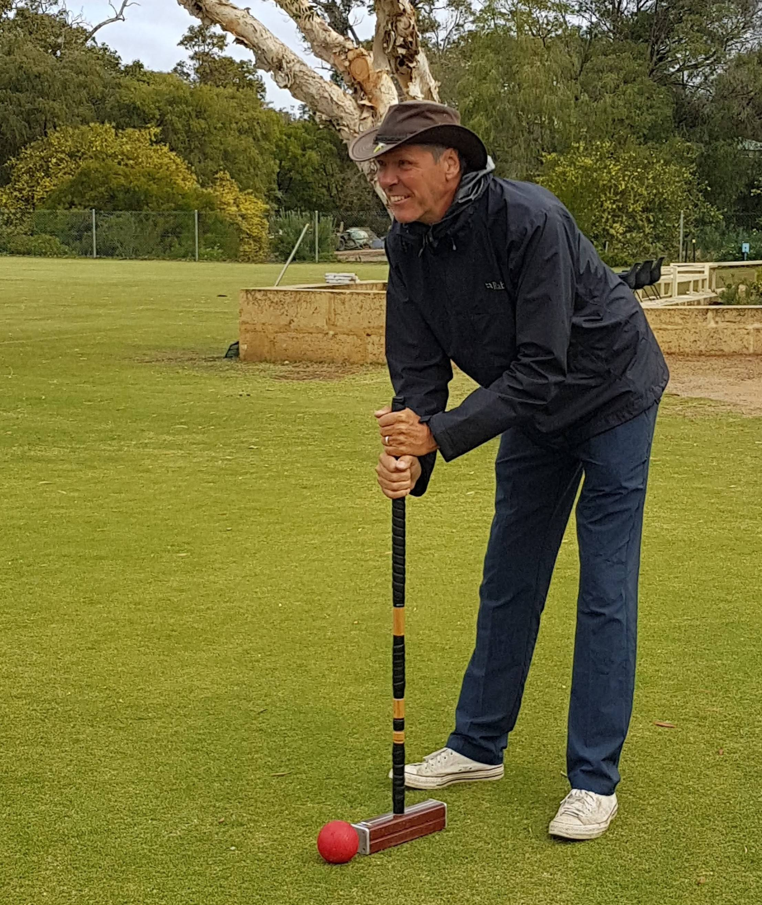
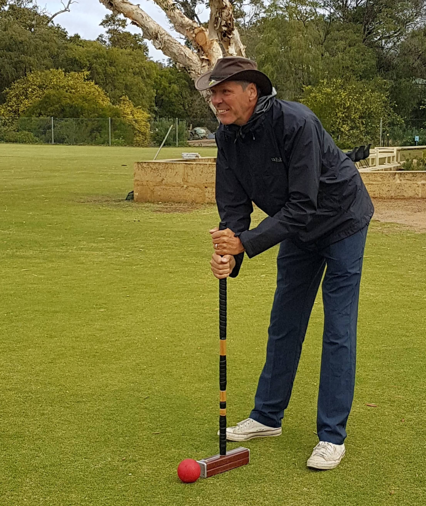

Croquetkom
Bonjour!
Welcome to Croquet kom! the place for anyone who loves sparkling wine in combination with one of the world’s most exiting games, croquet. We play by classic croquet rules only with a small twist. Every player needs to make their own croquet-bat. Here only the imagination sets the limits but the place of contact to the croquet ball cant be bigger than twice the dimensions of a traditional croquet-bat. In addition to the first rule, every player must hold a glass of sparkling wine in one hand when making a play for the play to be deemed valid. Croquet kom is a sophisticated club which is open to every member of Leonardo linjeforending. We play together regularly during the croquet season and hope to see you with us during upcoming sunny days! You can reach the leader of croquet kom, Viktor Bredal, at 90012277 for questions or a quick chat.
Use the arrows to
see photos!
 
